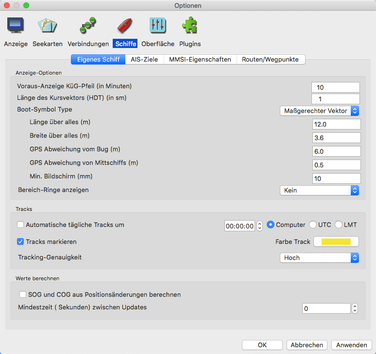

Schiffs Track
Mit dem Track Symbol wird das Tracking ein- und ausgeschaltet. Tracking heißt, daß eine Aufnahme der Schiffs-Positionen erfolgt, so wie es fährt. Es wird eine Spur hinter dem Schiff hinterlassen.

Tracks markieren
Erzeugt einen 10 m breiten Streifen auf beiden Seiten des Tracks, nicht wählbar für individuelle Tracks. Das soll daran erinnern, daß das Folgen eines vorherigen Tracks uns der Ungenauigkeit des GPS aussetzt, die in etwa in diesem Bereich liegt, aber nicht notwendigerweise in der Mitte. Zudem wird nichts über die Ungenauigkeit der Karte ausgesagt. Bei vielen Karten kann bei ihrer nominalen Skalierung von einer Ungenauigkeit von 1,5 Seemeilen ausgegangen werden. Bei einer Karte im Maßstab von 1:20.000 sind das 30 m.
Automatische tägliche Tracks
Automatisches tägliches Tracking stellt sicher, daß die während eines Tages (Mitternacht bis Mitternacht in der lokalen Zeitzone) gesammelten Trackpunkte
gespeichert und als einzelnes Track (möglicherweise Multi-Segment) behandelt werden. Ist dieses aktiviert, dann kann mit dem Track Button in der Werkzeugleiste
wie vorher das Tracking aus- und eingeschaltet werden. Jedoch wird beim Ausschalten der akkumulierte Track mit dem vorherigen erweitert, wenn dieser nicht in den
Vortag hineinragt. Entkoppelte Segmente bleiben separat, zeitlich angrenzende Segmente werden zu einem Segment verbunden. Immer um Mitternacht wird Tracking
automatisch ab- und wieder angeschaltet zur Sicherheit, daß der Track nicht das Datum überschreitet. Wird das automatische Tracking während des
Tages eingeschaltet, wenn einige Tracks schon erzeugt wurden, wird nur der letzte mit den folgenden Tages-Tracks verbunden.
Angenommen das automatische tägliche Tracking ist ein, sind normalerweise bei Tracking-Perioden zwei Tracks im Routen-Manager sichtbar: Der aktuelle Track
(rote Trackpunkte auf der Karte) und der vorher akkumulierte Track des Tages. Nach Ausschalten des Tracking gibt es nur einen Track des Tages.
Muß die Zeitzone geändert werden, sollte man OpenCPN vorher ausschalten.
Mit der Möglichkeit des Splittens oder Zusammenführens können Tracks jederzeit leicht bearbeitet werden.
Ohne aktiviertes automatisches tägliches Tracking behandelt OpenCPN Tracks wie zuvor.
Für Tracks ohne expliziten Namen zeigt der Routen-Manager Namen bestehend aus der Startzeit (in UTC) an. Es wird empfohlen, einen selbst gewählten
Standard bei der Namenvergabe zu verwenden.
Tracking-Genauigkeit
kann auf Niedrig, Mittel oder Hoch gesetzt werden und beeinflußt die Größe der aufgenommen Daten sowie Sichtbarkeit der Punkte und "Weichheit" der Track-Kurve.
Aufgenommene Tracks können importiert, exportiert und mit dem Routen-Manager und Daten Import/Export bearbeitet werden.
Mit Rechts-Klick auf einen Track können vom Menü die Eigenschaften gewählt werden und es erscheint ein neuer Dialog. Das Gleiche kann mit dem Routen-Manager erreicht
werden. Gelistet wird ein Datensatz aller Trackpunkte. Unten sieht man einen Trackpunkt Eintrag jede Minute
wegen der Auswahl oben "alle 60 Sekunden". Klickt man entweder auf "Leg" oder "Zum Wegpunkt", markiert
ein blaues Quadrat die Position auf dem Track.
Mit dem Rechts-Klick Menü ist auch die Track-Löschen Option erreichbar.
Mehr über Tracks steht unter Routen-Manager und Daten Import/Export
Als Backup wird jede halbe Stunde ein Eintrag in der OpenCPN Logdatei gemacht, der so ähnlich aussieht:
14:30:00 CEST: LOGBOOK: 2011-06-28 12:30:00 UTC DR Lat 44.43657 Lon -65.17280